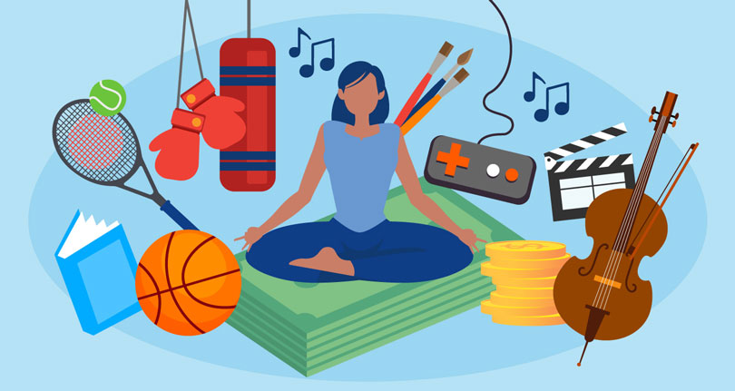

Using LLMs to Generate Side Quests and Discover New Hobbies
As a senior with little coursework remaining, I have been seeking the next interesting thing to try and spend time doing. In my book Co-Intelligence, Mollick writes that LLMs excel at brainstorming so I wanted to experiment with them more! Whether you’re stuck in a routine or simply curious about expanding your horizons, AI can help you discover side quests and hobbies you might never have considered on your own. I am going to experiment with several approaches, such as not giving any context, giving hobbies I already have, etc. I am using ChatGPT-5 for this.

Unstructured Prompt
PROMPT: What are three new side quests to go on or hobbies that I could start?
RESPONSE: Love that framing — “side quests” makes it sound fun instead of like another task. Here are three fresh ones in different moods:
🎨 1. The Analog Creation Quest What it is: Pick one old-school creative medium (film photography, collage, ceramics, zines) and make something tangible every week. Why it’s a great quest: It’s grounding and gets you out of your digital loop. Bonus: you end up with a growing collection of physical “relics” from your journey. Starter mission: Make a tiny 4-page zine about your week using paper, scissors, and glue.
🌿 2. The Hidden Ecosystem Quest What it is: Explore and catalog the unseen life around you — fungi, urban wildlife, native plants, insects. Use an app like iNaturalist to ID and track what you find. Why it’s great: It rewires your attention toward noticing small details and teaches you a surprising amount of biology and ecology. Starter mission: Find three species within a 10-minute walk of your home and record them.
🧠 3. The Micro-Mastery Quest What it is: Each month, pick one tiny skill to learn just enough to be impressive at — like lockpicking, latte art, sleight of hand, Morse code, or whistling through your fingers. Why it’s great: It keeps curiosity alive and gives you quick hits of satisfaction without pressure for mastery. Starter mission: Choose one skill you could show off in under a minute and learn it by next weekend.
Would you like me to tailor a few more based on your vibe — like more outdoorsy, creative, social, or introspective ones?
I am honestly really impressed by these recommendations. They make sense and definitely give the vibe of “side quest”. They are not super common suggestions and seem more niche. I have actually been wanting to get more into film photography so I really like that first point. The second suggestion makes a lot of sense, but doesn’t seem like it would be super entertaining for me. The third one is interesting and I wonder how lockpicking became the first skill it suggests. Honestly, all of the skills in the third section seem quite niche, so I find it interesting and quite random that they are being suggested.
Given Context Prompt
PROMPT: What are three new side quests to go on or hobbies that I could start? I currently enjoy running, going to Solidcore, and tap dancing. I also spend a lot of time on tiktok so I would like something to do besides that
RESPONSE: Love that mix — you’ve got movement, rhythm, and some discipline-based fun already going on. Here are three “side quests” that build off your current interests but add new dimensions so your brain and body both get something fresh:
🎭 1. “The Expressive Quest” — Try Improv or Acting for Fun
You already have great rhythm and performance instincts from tap; improv or beginner acting classes tap (no pun intended) into creativity, spontaneity, and storytelling. Why it fits: You’ll still get that performative energy, but in a totally different format — less choreography, more story and laughter. Where to start: Check local theaters or community centers for beginner improv nights or short-term acting workshops.
🌿 2. “The Restoration Quest” — Learn Urban Gardening or Plant Propagation
Running and Solidcore give you endorphins — gardening gives you calm focus. Try growing herbs, succulents, or microgreens indoors. Why it fits: It balances your high-energy hobbies with something grounding and tactile. Plus, you can see daily progress without staring at a screen. Bonus challenge: Turn it into a small “project” — build a windowsill garden or see how many plants you can propagate and gift to friends.
🎧 3. “The Creation Quest” — Start a Podcast or Creative Audio Journal
If you like TikTok’s storytelling and trends but want something deeper, use that curiosity in a longer format. Why it fits: You already consume tons of micro-content — making your own gives you creative control. Could be about “trying something new every month,” or interviewing other hobbyists. Low-barrier start: Use Voice Memos or a free app like Spotify for Podcasters.
Would you like me to tailor a few more “side quests” depending on mood — like social ones, solo flow ones, or ones that feel like little adventures?
These are also pretty good in my opinion! I actually wanted to take the Intro to Acting class at Penn, but never got around to it. I have tried growing plants, but have never been quite successful in keeping them alive. For the third point, I really don’t know what I would talk about, but it’s a relevant suggestion as I feel like so many random people have podcasts.
Specific with Price and Time Prompt
PROMPT: Give me three side quests to go on that I could do with $50 and basic household items. I have a good amount of time that I can devote to this. I am currently located in Philadelphia and it is October.
RESPONSE: Perfect — October in Philly is peak side quest season. 🍂 You’ve got a mix of cozy fall vibes, walkable neighborhoods, and creative opportunities. Here are three $50-or-less side quests that use things you likely already have at home and make the most of the season:
🎭 Side Quest 1: “The Secret Stories of Philly” Mini Documentary
Theme: Explore and document hidden or weird local stories. Budget: ~$25 for a SEPTA day pass + coffee/snacks. What you’ll use: Your phone (for filming), notebook, and curiosity.
Quest Steps:
- Pick a theme — “abandoned corners,” “unsung murals,” or “haunted Philadelphia.”
- Map out 3–4 nearby sites (e.g. Eastern State Penitentiary’s exterior, hidden murals in South Philly, Elfreth’s Alley).
- Interview locals, take short clips, or narrate as you go.
- Edit together a 2–3 minute “micro-documentary” using free apps (CapCut, iMovie).
- Post it or share it privately — your call.
Bonus challenge: Do it as a series — one per week through November.
🌱 Side Quest 2: “The Cozy Swap” – Make & Gift Autumn Comfort Kits
Theme: Small acts of creative kindness. Budget: ~$40 for supplies (mugs, tea bags, thrifted candles, etc.). What you’ll use: String, paper, jars, your own pantry extras.
Quest Steps:
- Assemble 3–5 “comfort kits” — things like homemade granola, tea blends, or DIY candles in old jars.
- Write a handwritten note (“Made this to brighten your day — from a random Philly neighbor”).
- Drop them off at library book exchanges, laundromats, or benches.
- Document your adventure in photos or a journal entry.
Bonus challenge: Trade a kit with a stranger — like an urban “kindness geocache.”
🏃♀️ Side Quest 3: “The 5 Boroughs Run & Eat Challenge”
Theme: Explore through movement + food. Budget: ~$50 (cheap eats + SEPTA fare). What you’ll use: Running shoes, phone camera, and a reusable water bottle.
Quest Steps:
Pick 5 Philly neighborhoods (e.g. Fishtown, Fairmount, University City, South Philly, Old City).
In each:
- Run (or walk) a new route.
- Try one local snack or coffee under $10.
- Snap a picture of one thing you’ve never noticed before.
Compile the photos into a little digital “Run & Eat Log.”
Bonus challenge: End it with your favorite — and map your personal “Philly of small joys.”
Would you like me to tailor the next set of side quests toward something more social (meet new people, small group activities) or more solo/adventurer style (exploration, self-discovery, creativity)?
I really like the 5 boroughs run and eat challenge idea. I might find some friends to do it with!
Thoughts
Overall, I thought that ChatGPT-5 did better than I was expecting. The suggestions were all pretty unique and ideas that were both feasible and fun. I found it interesting that all the of the responses had an environment/giving back answer and wonder if that is in the model to provide suggestions that are good for the world when brainstorming. I didn’t really think there was much of a difference between the quality of suggestions and the prompts that I used. All responses were in the same format and were structured similarly. I enjoyed these suggestions and hope to do some of them!